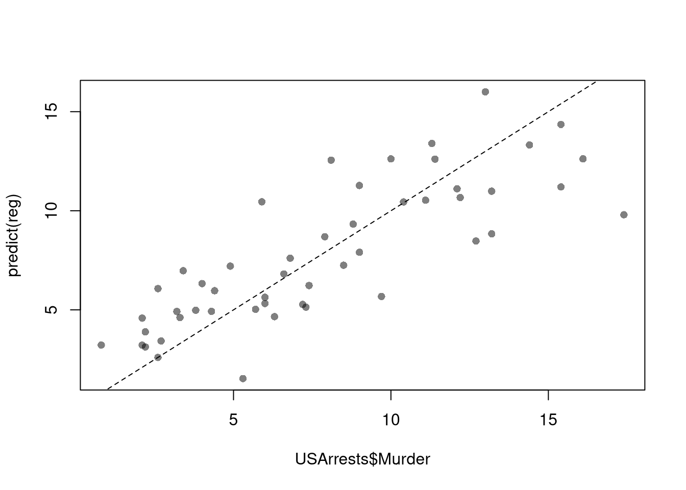
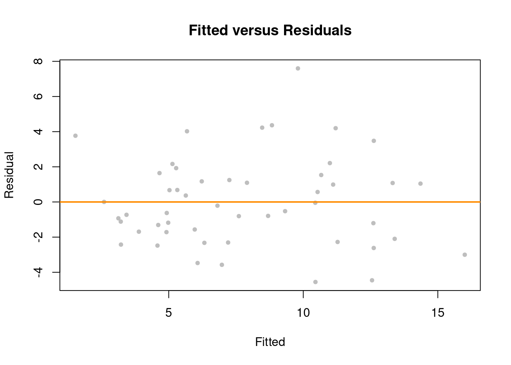
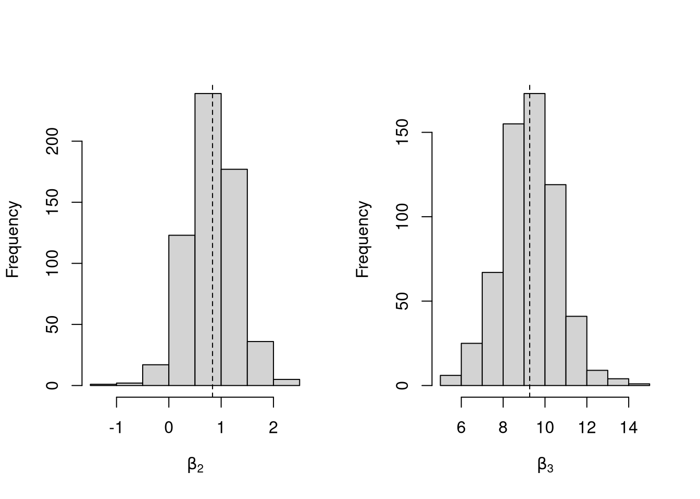
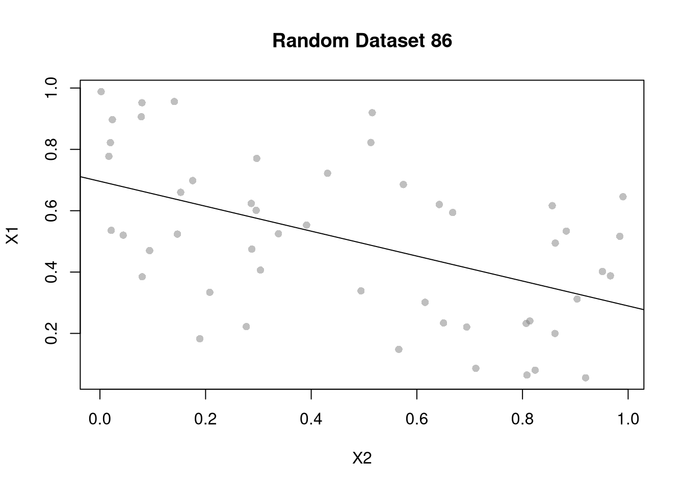
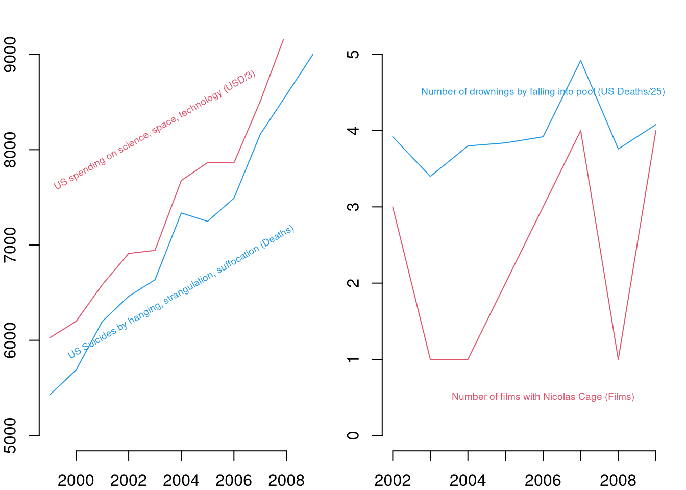
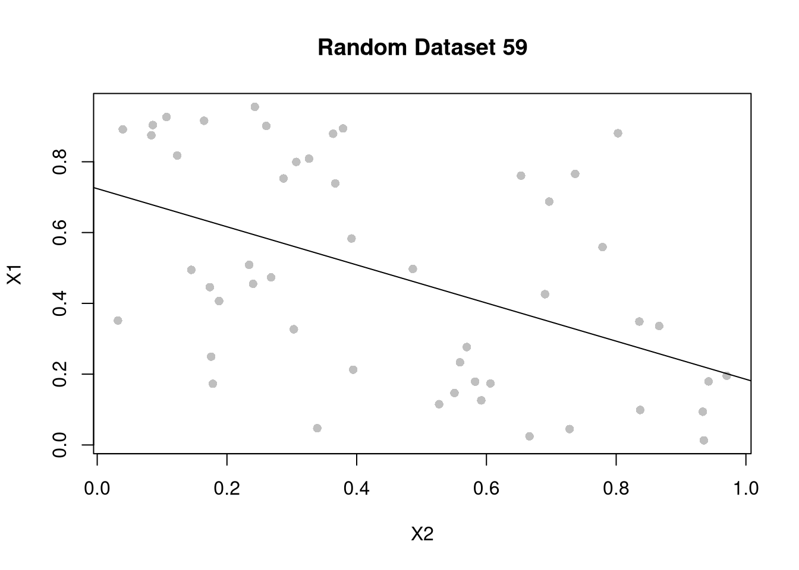

8 Multiple Linear Regression
Model and objective \[ y_i=\beta_0+\beta_1x_{i1}+\beta_2x_{i2}+\ldots+\beta_kx_{ik}+\epsilon_i = X_{i}\beta +\epsilon_i \\ min_{\beta} \sum_{i=1}^{n} (\epsilon_i)^2 \] Can also be written in matrix form \[ y=\textbf{X}\beta+\epsilon\\ min_{\beta} (\epsilon' \epsilon) \]
Point Estimates \[ \hat{\beta}=(\textbf{X}'\textbf{X})^{-1}\textbf{X}'y \]
Before fitting the model, summarize your data (as in Part I)
## Murder Assault UrbanPop Rape
## Alabama 13.2 236 58 21.2
## Alaska 10.0 263 48 44.5
## Arizona 8.1 294 80 31.0
## Arkansas 8.8 190 50 19.5
## California 9.0 276 91 40.6
## Colorado 7.9 204 78 38.7library(psych)
pairs.panels( USArrests[,c('Murder','Assault','UrbanPop')],
hist.col=grey(0,.25), breaks=30, density=F, ## Diagonal
ellipses=F, rug=F, smoother=F, pch=16, col=grey(0,.5) ## Lower Triangle
)
Now we fit the model to the data
## Manually Compute
Y <- USArrests[,'Murder']
X <- USArrests[,c('Assault','UrbanPop')]
X <- as.matrix(cbind(1,X))
XtXi <- solve(t(X)%*%X)
Bhat <- XtXi %*% (t(X)%*%Y)
c(Bhat)## [1] 3.20715340 0.04390995 -0.04451047## (Intercept) Assault UrbanPop
## 3.20715340 0.04390995 -0.04451047To measure the ``Goodness of fit’’ of the model, we can again compute sums of squared errors. Adding random data may sometimes improve the fit, however, so we adjust the \(R^2\) by the number of covariates \(K\). \[ R^2 = \frac{ESS}{TSS}=1-\frac{RSS}{TSS}\\ R^2_{\text{adj.}} = 1-\frac{n-1}{n-K}(1-R^2) \]
ksims <- 1:30
for(k in ksims){
USArrests[,paste0('R',k)] <- runif(nrow(USArrests),0,20)
}
reg_sim <- lapply(ksims, function(k){
rvars <- c('Assault','UrbanPop', paste0('R',1:k))
rvars2 <- paste0(rvars, collapse='+')
reg_k <- lm( paste0('Murder~',rvars2), data=USArrests)
})
R2_sim <- sapply(reg_sim, function(reg_k){ summary(reg_k)$r.squared })
R2adj_sim <- sapply(reg_sim, function(reg_k){ summary(reg_k)$adj.r.squared })
plot.new()
plot.window(xlim=c(0,30), ylim=c(0,1))
points(ksims, R2_sim)
points(ksims, R2adj_sim, pch=16)
axis(1)
axis(2)
mtext(expression(R^2),2, line=3)
mtext('Additional Random Covariates', 1, line=3)
legend('topleft', horiz=T,
legend=c('Undjusted', 'Adjusted'), pch=c(1,16))
8.1 Variability and Hypothesis Tests
To estimate the variability of our estimates, we can use the same data-driven methods introduced in the last section.
## Bootstrap SE's
boots <- 1:399
boot_regs <- lapply(boots, function(b){
b_id <- sample( nrow(USArrests), replace=T)
xy_b <- USArrests[b_id,]
reg_b <- lm(Murder~Assault+UrbanPop, dat=xy_b)
})
boot_coefs <- sapply(boot_regs, coef)
boot_mean <- apply(boot_coefs,1, mean)
boot_se <- apply(boot_coefs,1, sd)As before, we can conduct independant hypothesis tests using t-values. We can also conduct joint tests, such as whether two coefficients are equal, by looking at the their joint distribution.
boot_coef_df <- as.data.frame(cbind(ID=boots, t(boot_coefs)))
fig <- plotly::plot_ly(boot_coef_df,
type = 'scatter', mode = 'markers',
x = ~UrbanPop, y = ~Assault,
text = ~paste('<b> boot: ', ID, '</b>'),
hoverinfo='text',
showlegend=F,
marker=list( color='rgba(0, 0, 0, 0.5)'))
fig <- plotly::layout(fig,
showlegend=F,
title='Joint Distribution of Coefficients',
xaxis = list(title='UrbanPop Coefficient'),
yaxis = list(title='Homicide Coefficient'))
figWe can also use an \(F\) test for any \(q\) hypotheses; \[ \widehat{F}_{q} = \frac{(ESS_{restricted}-ESS_{unrestricted})/q}{ESS_{unrestricted}/(n-q)}=\frac{R^2}{(1-R^2)}\frac{n-q}{q}, \] which can also be written in terms of adjusted \(R^2\). For some intuition on hypothesis testing, we examine how the \(R^2\) statistic varies with bootstrap samples. Specifically, compute a null \(R^2\) distribution by randomly reshuffling the outcomes and compare it to the observed \(R^2\).
## Bootstrap NULL
boots <- 1:399
boot_regs0 <- lapply(boots, function(b){
xy_b <- USArrests
b_id <- sample( nrow(USArrests), replace=T)
xy_b$Murder <- xy_b$Murder[b_id]
reg_b <- lm(Murder~Assault+UrbanPop, dat=xy_b)
})
boot_coefs0 <- sapply(boot_regs0, function(reg_k){
coef(reg_k) })
R2_sim0 <- sapply(boot_regs0, function(reg_k){
summary(reg_k)$r.squared })
R2adj_sim0 <- sapply(boot_regs0, function(reg_k){
summary(reg_k)$adj.r.squared })
hist(R2adj_sim0, xlim=c(0,1), breaks=25,
main='', xlab=expression('adj.'~R[b]^2))
abline(v=summary(reg)$adj.r.squared, col="red", lwd=2)
Under some additional assumptions \(\widehat{F}_{q} \sim F_{q,n-q}\). Note that hypothesis testing is not to be done routinely, as complications arise when testing multiple hypothesis.
8.2 Factor Variables
So far, we have discussed cardinal data where the difference between units always means the same thing: e.g., \(4-3=2-1\). There are also factor variables
- Ordered: refers to Ordinal data. The difference between units means something, but not always the same thing. For example, \(4th - 3rd \neq 2nd - 1st\).
- Unordered: refers to Categorical data. The difference between units is meaningless. For example, \(B-A=?\)
To analyze either factor, we often convert them into indicator variables or dummies; \(D_{c}=\mathbf{1}( Factor = c)\). One common case is if you have observations of individuals over time periods, then you may have two factor variables. An unordered factor that indicates who an individual is; for example \(D_{i}=\mathbf{1}( Individual = i)\), and an order factor that indicates the time period; for example \(D_{t}=\mathbf{1}( Time \in [month~ t, month~ t+1) )\). There are many other cases you see factor variables, including spatial ID’s in purely cross sectional data.
Be careful not to handle categorical data as if they were cardinal. E.g., generate city data with Leipzig=1, Lausanne=2, LosAngeles=3, … and then include city as if it were a cardinal number (that’s a big no-no). The same applied to ordinal data; PopulationLeipzig=2, PopulationLausanne=3, PopulationLosAngeles=1.
N <- 1000
x <- runif(N,3,8)
e <- rnorm(N,0,0.4)
fo <- factor(rbinom(N,4,.5), ordered=T)
fu <- factor(rep(c('A','B'),N/2), ordered=F)
dA <- 1*(fu=='A')
y <- (2^as.integer(fo)*dA )*sqrt(x)+ 2*as.integer(fo)*e
dat_f <- data.frame(y,x,fo,fu)With factors, you can still include them in the design matrix of an OLS regression \[ y_{it} = x_{it} \beta_{x} + d_{c}\beta_{c} \] When, as commonly done, the factors are modeled as being additively seperable, they are modelled as either “fixed” or “random” effects.
Simply including the factors into the OLS regression yields a “dummy variable” fixed effects estimator.
##
## Call:
## lm(formula = y ~ x + fo + fu, data = dat_f)
##
## Residuals:
## Min 1Q Median 3Q Max
## -36.119 -5.946 -0.020 5.981 41.429
##
## Coefficients:
## Estimate Std. Error t value Pr(>|t|)
## (Intercept) 21.8312 1.2595 17.333 < 2e-16 ***
## x 0.8846 0.2075 4.263 2.21e-05 ***
## fo.L 24.6277 1.1118 22.151 < 2e-16 ***
## fo.Q 10.6245 0.9735 10.913 < 2e-16 ***
## fo.C 1.1158 0.7694 1.450 0.147
## fo^4 0.3952 0.5753 0.687 0.492
## fuB -23.9702 0.6015 -39.853 < 2e-16 ***
## ---
## Signif. codes: 0 '***' 0.001 '**' 0.01 '*' 0.05 '.' 0.1 ' ' 1
##
## Residual standard error: 9.492 on 993 degrees of freedom
## Multiple R-squared: 0.7122, Adjusted R-squared: 0.7105
## F-statistic: 409.5 on 6 and 993 DF, p-value: < 2.2e-16We can also compute averages for each group and construct a “between estimator” \[ \overline{y}_i = \alpha + \overline{x}_i \beta \] Or we can subtract the average from each group to construct a “within estimator”, \[ (y_{it} - \overline{y}_i) = (x_{it}-\overline{x}_i)\beta\\ \] that tends to be more computationally efficient, has corrections for standard errors, and has additional summary statistics.
## OLS estimation, Dep. Var.: y
## Observations: 1,000
## Fixed-effects: fo: 5, fu: 2
## Standard-errors: Clustered (fo)
## Estimate Std. Error t value Pr(>|t|)
## x 0.884559 0.32396 2.73046 0.052418 .
## ---
## Signif. codes: 0 '***' 0.001 '**' 0.01 '*' 0.05 '.' 0.1 ' ' 1
## RMSE: 9.45873 Adj. R2: 0.710452
## Within R2: 0.017975## x fo0 fo1 fo2 fo3 fo4
## 0.8845595 11.6287024 11.7205367 16.4356075 25.8850122 43.4862777
## fuB
## -23.9702422## $fo
## 0 1 2 3 4
## 11.62870 11.72054 16.43561 25.88501 43.48628
##
## $fu
## A B
## 0.00000 -23.97024
##
## attr(,"class")
## [1] "fixest.fixef" "list"
## attr(,"references")
## fo fu
## 0 1
## attr(,"exponential")
## [1] FALSEHansen Econometrics, Theorem 17.1: The fixed effects estimator of \(\beta\) algebraically equals the dummy variable estimator of \(\beta\). The two estimators have the same residuals.
Consistency is a great property, but only if the data generating process does in fact match the model. Many factor variables have effects that are not additively seperable.
## OLS estimation, Dep. Var.: y
## Observations: 1,000
## Fixed-effects: fo^fu: 10
## Standard-errors: Clustered (fo^fu)
## Estimate Std. Error t value Pr(>|t|)
## x 1.06469 0.499092 2.13326 0.061694 .
## ---
## Signif. codes: 0 '***' 0.001 '**' 0.01 '*' 0.05 '.' 0.1 ' ' 1
## RMSE: 3.37998 Adj. R2: 0.962878
## Within R2: 0.171768##
## Call:
## lm(formula = y ~ x * fo * fu, data = dat_f)
##
## Residuals:
## Min 1Q Median 3Q Max
## -9.9002 -1.4035 -0.0408 1.4681 9.8443
##
## Coefficients:
## Estimate Std. Error t value Pr(>|t|)
## (Intercept) 14.19461 0.58167 24.403 < 2e-16 ***
## x 2.64381 0.10079 26.230 < 2e-16 ***
## fo.L 25.09434 1.63065 15.389 < 2e-16 ***
## fo.Q 9.24158 1.42785 6.472 1.52e-10 ***
## fo.C 2.02554 1.15163 1.759 0.0789 .
## fo^4 0.23008 0.86190 0.267 0.7896
## fuB -14.50412 0.80621 -17.991 < 2e-16 ***
## x:fo.L 5.00748 0.28220 17.745 < 2e-16 ***
## x:fo.Q 1.91657 0.24724 7.752 2.26e-14 ***
## x:fo.C 0.35349 0.19982 1.769 0.0772 .
## x:fo^4 0.05234 0.15000 0.349 0.7272
## x:fuB -2.62791 0.14055 -18.697 < 2e-16 ***
## fo.L:fuB -26.44254 2.25935 -11.704 < 2e-16 ***
## fo.Q:fuB -9.44029 1.97683 -4.775 2.07e-06 ***
## fo.C:fuB -1.23989 1.60063 -0.775 0.4387
## fo^4:fuB 0.68257 1.19365 0.572 0.5676
## x:fo.L:fuB -4.91873 0.39342 -12.503 < 2e-16 ***
## x:fo.Q:fuB -1.94711 0.34438 -5.654 2.06e-08 ***
## x:fo.C:fuB -0.50158 0.27945 -1.795 0.0730 .
## x:fo^4:fuB -0.20044 0.20890 -0.960 0.3375
## ---
## Signif. codes: 0 '***' 0.001 '**' 0.01 '*' 0.05 '.' 0.1 ' ' 1
##
## Residual standard error: 2.48 on 980 degrees of freedom
## Multiple R-squared: 0.9806, Adjusted R-squared: 0.9802
## F-statistic: 2608 on 19 and 980 DF, p-value: < 2.2e-16With Random Effects, the factor variable is modeled as coming from a distribution that is uncorrelated with the regressors. This is rarely used in economics today, and mostly included for historical reasons and a few cases where fixed effects cannot be estimates.
Test for Break Points
#library(AER); data(CASchools)
#CASchools$score <- (CASchools$read + CASchools$math) / 2
#reg <- lm(score ~ income, data = CASchools)
#xy <- CASchools[,c('Score','Income'),]
#colnames(xy) <- c('y','x')
## F Test for Break
anova(reg, reg2)
## Chow Test for Break
data_splits <- split(xy, xy$xcut)
resids <- sapply(data_splits, function(dat){
reg <- lm(score ~ income, data=dat)
sum( resid(reg)^2)
})
Ns <- sapply(data_splits, function(dat){ nrow(dat)})
Rt <- (sum(resid(reg)^2) - sum(resids))/sum(resids)
Rb <- (sum(Ns)-2*reg$rank)/reg$rank
Ft <- Rt*Rb
pf(Ft,reg$rank, sum(Ns)-2*reg$rank,lower.tail=F)
## To Test for Any Break
## strucchange::sctest(y~x, data=xy, type="Chow", point=.5)
## strucchange::Fstats(y~x, data=xy)
## To Find Changes
## segmented::segmented(reg)8.3 Coefficient Interpretation
Notice that we have gotten pretty far without actually trying to meaningfully interpret regression coefficients. That is because the above procedure will always give us number, regardless as to whether the true data generating process is linear or not. So, to be cautious, we have been interpretting the regression outputs while being agnostic as to how the data are generated. We now consider a special situation where we know the data are generated according to a linear process and are only uncertain about the parameter values.
If the data generating process is \[ y=X\beta + \epsilon\\ \mathbb{E}[\epsilon | X]=0, \] then we have a famous result that lets us attach a simple interpretation of OLS coefficients as unbiased estimates of the effect of X: \[ \hat{\beta} = (X'X)^{-1}X'y = (X'X)^{-1}X'(X\beta + \epsilon) = \beta + (X'X)^{-1}X'\epsilon\\ \mathbb{E}\left[ \hat{\beta} \right] = \mathbb{E}\left[ (X'X)^{-1}X'y \right] = \beta + (X'X)^{-1}\mathbb{E}\left[ X'\epsilon \right] = \beta \]
Generate a simulated dataset with 30 observations and two exogenous variables. Assume the following relationship: \(y_{i} = \beta_0 + \beta_1 x_{1,i} + \beta_2 x_{2,i} + \epsilon_i\) where the variables and the error term are realizations of the following data generating processes (DGP):
N <- 30
B <- c(10, 2, -1)
x1 <- runif(N, 0, 5)
x2 <- rbinom(N,1,.7)
X <- cbind(1,x1,x2)
e <- rnorm(N,0,3)
Y <- X%*%B + e
dat <- data.frame(Y,X)
coef(lm(Y~x1+x2, data=dat))## (Intercept) x1 x2
## 8.0693799 2.8145066 -0.3177246Simulate the distribution of coefficients under a correctly specified model. Interpret the average.
N <- 30
B <- c(10, 2, -1)
Coefs <- sapply(1:400, function(sim){
x1 <- runif(N, 0, 5)
x2 <- rbinom(N,1,.7)
X <- cbind(1,x1,x2)
e <- rnorm(N,0,3)
Y <- X%*%B + e
dat <- data.frame(Y,x1,x2)
coef(lm(Y~x1+x2, data=dat))
})
par(mfrow=c(1,2))
for(i in 2:3){
hist(Coefs[i,], xlab=bquote(beta[.(i)]), main='')
abline(v=mean(Coefs[i,]), col=1, lty=2)
abline(v=B[i], col=2)
}
Many economic phenomena are nonlinear, even when including potential transforms of \(Y\) and \(X\). Sometimes the linear model may still be a good or even great approximation (how good depends on the research question). In any case, you are safe to interpret your OLS coefficients as “conditional correlations”. For example, examine the distribution of coefficients under this mispecified model. Interpret the average.
N <- 30
Coefs <- sapply(1:600, function(sim){
x1 <- runif(N, 0, 5)
x2 <- rbinom(N,1,.7)
e <- rnorm(N,0,3)
Y <- 10*x2 + 2*log(x1)^x2 + e
dat <- data.frame(Y,x1,x2)
coef(lm(Y~x1+x2, data=dat))
})
par(mfrow=c(1,2))
for(i in 2:3){
hist(Coefs[i,], xlab=bquote(beta[.(i)]), main='')
abline(v=mean(Coefs[i,]), col=1, lty=2)
}
8.4 Diagnostics
There’s little sense in getting great standard errors for a terrible model. Plotting your regression object a simple and easy step to help diagnose whether your model is in some way bad.
 We now go through what these figures show, and then some additional
Outliers The first plot examines outlier \(Y\) and \(\hat{Y}\).
``In our \(y_i = a + b x_i + e_i\) regression, the residuals are, of course, \(e_i\) – they reveal how much our fitted value \(\hat{y}_i = a + b x_i\) differs from the observed \(y_i\). A point \((x_i ,y_i)\) with a corresponding large residual is called an outlier. Say that you are interested in outliers because you somehow think that such points will exert undue influence on your estimates. Your feelings are generally right, but there are exceptions. A point might have a huge residual and yet not affect the estimated \(b\) at all’’ Stata Press (2015) Base Reference Manual, Release 14, p. 2138.
plot(fitted(reg), resid(reg),col = "grey", pch = 20,
xlab = "Fitted", ylab = "Residual",
main = "Fitted versus Residuals")
abline(h = 0, col = "darkorange", lwd = 2)
The third plot examines outlier \(X\) via ``leverage’’
“\((x_i ,y_i)\) can be an outlier in another way – just as \(y_i\) can be far from \(\hat{y}_i\), \(x_i\) can be far from the center of mass of the other \(x\)’s. Such an `outlier’ should interest you just as much as the more traditional outliers. Picture a scatterplot of \(y\) against \(x\) with thousands of points in some sort of mass at the lower left of the graph and one point at the upper right of the graph. Now run a regression line through the points—the regression line will come close to the point at the upper right of the graph and may in fact, go through it. That is, this isolated point will not appear as an outlier as measured by residuals because its residual will be small. Yet this point might have a dramatic effect on our resulting estimates in the sense that, were you to delete the point, the estimates would change markedly. Such a point is said to have high leverage’’ Stata Press (2015) Base Reference Manual, Release 14, pp. 2138-39.
N <- 40
x <- c(25, runif(N-1,3,8))
e <- rnorm(N,0,0.4)
y <- 3 + 0.6*sqrt(x) + e
plot(y~x, pch=16, col=grey(.5,.5))
points(x[1],y[1], pch=16, col=rgb(1,0,0,.5))
abline(lm(y~x), col=2, lty=2)
abline(lm(y[-1]~x[-1]))
See https://www.r-bloggers.com/2016/06/leverage-and-influence-in-a-nutshell/ for a good interactive explaination.
Leverage Vector: Distance within explanatory variables \[ H = [h_{1}, h_{2}, ...., h_{N}] \] \(h_i\) is the leverage of residual \(\hat{\epsilon_i}\).
Studentized residuals \[ r_i=\frac{\hat{\epsilon}_i}{s_{[i]}\sqrt{1-h_i}} \] and \(s_{(i)}\) the root mean squared error of a regression with the \(i\)th observation removed.
## 1
## 1## 36
## 36The fourth plot further assesses outlier \(X\) using “Cook’s Distance”. Cook’s Distance is defined as the sum of all the changes in the regression model when observation i is removed from. \[ D_{i} = \frac{\sum_{j} \left( \hat{y_j} - \hat{y_j}_{[i]} \right)^2 }{ p s^2 } = \frac{[e_{i}]^2}{p s^2 } \frac{h_i}{(1-h_i)^2}\\ s^2 = \frac{\sum_{i} (e_{i})^2 }{n-K} \]
## 1
## 1
## StudRes Hat CookD
## 1 -0.5475148 0.78800671 0.56760601
## 23 0.2437717 0.04067518 0.00129177
## 30 -2.7487652 0.03388511 0.11300708
## 36 2.6432114 0.02663157 0.08256897Note that we can also calculate \(H\) directly from our OLS projection matrix \(\hat{P}\), since \(H=diag(\hat{P})\) and \[ \hat{P}=X(X'X)^{-1}X'\\ \hat{\epsilon}=y-X\hat{\beta}=y-X(X'X)^{-1}X'y=y-\hat{P}y\\ \hat{P}y=X(X'X)^{-1}X'y=y-(y-X(X'X)^{-1}X'y)=y-\hat{\epsilon}=\hat{y}\\ \]
Ehat <- Y - X%*% Bhat
## Ehat
## resid(reg)
Pmat <- X%*%XtXi%*%t(X)
Yhat <- Pmat%*%Y
## Yhat
## predict(reg)There are many other diagnostics (which can often be written in terms of Cooks Distance or Vice Versa).
# Sall, J. (1990) Leverage plots for general linear hypotheses. American Statistician *44*, 308-315.
# car::leveragePlots(reg)(Welsch and Kuh. 1977; Belsley, Kuh, and Welsch. 1980) attempt to summarize the information in the leverage versus residual-squared plot into one DFITS statistic where \(DFITS > 2\sqrt{{k}/{n}}\) should be examined. \[ \text{DFITS}_i=r_i\sqrt{\frac{h_i}{1-h_i}}\\ \]
See also “dfbetas” and “covratio”
## dfb.1_ dfb.x dffit cov.r cook.d hat
## 1 0.791458125 -1.038721220 -1.055600976 4.8959020 5.676060e-01 0.78800671
## 2 0.002536127 0.002605934 0.009569796 1.0838631 4.702389e-05 0.02700227
## 3 0.164722375 0.015033033 0.343442235 0.8562152 5.388408e-02 0.02504799
## 4 -0.206671277 0.069361155 -0.292972415 0.9199075 4.061318e-02 0.02648447
## 5 -0.087944291 -0.001171340 -0.171857902 1.0174959 1.470881e-02 0.02500116
## 6 -0.015401817 0.006027514 -0.020690716 1.0835158 2.197475e-04 0.02731836Normality
The second plot examines whether the residuals are normally distributed. OLS point estimates do not depend on the normality of the residuals. (Good thing, because there’s no reason the residuals of economic phenomena should be so well behaved.) Many hypothesis tests of the regression estimates are, however, affected by the distribution of the residuals. For these reasons, you may be interested in assessing normality
par(mfrow=c(1,2))
hist(resid(reg), main='Histogram of Residuals', border=NA)
qqnorm(resid(reg), main="Normal Q-Q Plot of Residuals", col="darkgrey")
qqline(resid(reg), col="dodgerblue", lwd=2)
##
## Shapiro-Wilk normality test
##
## data: resid(reg)
## W = 0.99283, p-value = 0.996Heterskedasticity may also matters for variance estimates. This is not shown in the plot, but you can run a simple test
##
## studentized Breusch-Pagan test
##
## data: reg
## BP = 0.6302, df = 1, p-value = 0.4273Collinearity This is when one explanatory variable in a multiple linear regression model can be linearly predicted from the others with a substantial degree of accuracy. Coefficient estimates may change erratically in response to small changes in the model or the data. (In the extreme case where there are more variables than observations \(K>\geq N\), \(X'X\) has an infinite number of solutions and is not invertible.)
To diagnose this, we can use the Variance Inflation Factor \[ VIF_{k}=\frac{1}{1-R^2_k}, \] where \(R^2_k\) is the \(R^2\) for the regression of \(X_k\) on the other covariates \(X_{-k}\) (a regression that does not involve the response variable Y)
8.5 Linear in Parameters
Data transformations can often improve model fit and still be estimated via OLS. This is because OLS only requires the model to be linear in the parameters. Under the assumptions of the model is correctly specified, the following table is how we can interpret the coefficients of the transformed data. (Note for small changes, \(\Delta ln(x) \approx \Delta x / x = \Delta x \% \cdot 100\).)
| Specification | Regressand | Regressor | Derivative | Interpretation (If True) |
|---|---|---|---|---|
| linear–linear | \(y\) | \(x\) | \(\Delta y = \beta_1\cdot\Delta x\) | Change \(x\) by one unit \(\rightarrow\) change \(y\) by \(\beta_1\) units. |
| log–linear | \(ln(y)\) | \(x\) | \(\Delta y \% \cdot 100 \approx \beta_1 \cdot \Delta x\) | Change \(x\) by one unit \(\rightarrow\) change \(y\) by \(100 \cdot \beta_1\) percent. |
| linear–log | \(y\) | \(ln(x)\) | \(\Delta y \approx \frac{\beta_1}{100}\cdot \Delta x \%\) | Change \(x\) by one percent \(\rightarrow\) change \(y\) by \(\frac{\beta_1}{100}\) units |
| log–log | \(ln(y)\) | \(ln(x)\) | \(\Delta y \% \approx \beta_1\cdot \Delta x \%\) | Change \(x\) by one percent \(\rightarrow\) change \(y\) by \(\beta_1\) percent |
Now recall from micro theory that an additively seperable and linear production function is referred to as ``perfect substitutes’‘. With a linear model and untranformed data, you have implicitly modelled the different regressors \(X\) as perfect substitutes. Further recall that the’‘perfect substitutes’’ model is a special case of the constant elasticity of substitution production function. Here, we will build on http://dx.doi.org/10.2139/ssrn.3917397, and consider box-cox transforming both \(X\) and \(y\). Specifically, apply the box-cox transform of \(y\) using parameter \(\lambda\) and apply another box-cox transform to each \(x\) using the same parameter \(\rho\) so that \[ y^{(\lambda)}_{i} = \sum_{k}\beta_{k} x^{(\rho)}_{k,i} + \epsilon_{i}\\ y^{(\lambda)}_{i} = \begin{cases} \lambda^{-1}[ (y_i+1)^{\lambda}- 1] & \lambda \neq 0 \\ log(y_i+1) & \lambda=0 \end{cases}.\\ x^{(\rho)}_{i} = \begin{cases} \rho^{-1}[ (x_i)^{\rho}- 1] & \rho \neq 0 \\ log(x_{i}+1) & \rho=0 \end{cases}. \]
Notice that this nests:
- linear-linear \((\rho=\lambda=1)\).
- linear-log \((\rho=1, \lambda=0)\).
- log-linear \((\rho=0, \lambda=1)\).
- log-log \((\rho=\lambda=0)\).
If \(\rho=\lambda\), we get the CES production function. This nests the ‘’perfect substitutes’’ linear-linear model (\(\rho=\lambda=1\)) , the ‘’cobb-douglas’’ log-log model (\(\rho=\lambda=0\)), and many others. We can define \(\lambda=\rho/\lambda'\) to be clear that this is indeed a CES-type transformation where
- \(\rho \in (-\infty,1]\) controls the “substitutability” of explanatory variables. E.g., \(\rho <0\) is ‘’complementary’’.
- \(\lambda\) determines ‘’returns to scale’‘. E.g., \(\lambda<1\) is’‘decreasing returns’’.
We compute the mean squared error in the original scale by inverting the predictions; \[ \widehat{y}_{i} = \begin{cases} [ \widehat{y^{(\lambda)}}_{i} \cdot \lambda ]^{1/\lambda} -1 & \lambda \neq 0 \\ exp( \widehat{y^{(\lambda)}}_{i}) -1 & \lambda=0 \end{cases}. \]
It is easiest to optimize parameters in a 2-step procedure called `concentrated optimization’. We first solve for \(\widehat{\beta}(\rho,\lambda)\) and compute the mean squared error \(MSE(\rho,\lambda)\). We then find the \((\rho,\lambda)\) which minimizes \(MSE\).
## Box-Cox Transformation Function
bxcx <- function( xy, rho){
if (rho == 0L) {
log(xy+1)
} else if(rho == 1L){
xy
} else {
((xy+1)^rho - 1)/rho
}
}
bxcx_inv <- function( xy, rho){
if (rho == 0L) {
exp(xy) - 1
} else if(rho == 1L){
xy
} else {
(xy * rho + 1)^(1/rho) - 1
}
}
## Which Variables
reg <- lm(Murder~Assault+UrbanPop, data=USArrests)
X <- USArrests[,c('Assault','UrbanPop')]
Y <- USArrests[,'Murder']
## Simple Grid Search
## Which potential (Rho,Lambda)
rl_df <- expand.grid(rho=seq(-2,2,by=.5),lambda=seq(-2,2,by=.5))
## Compute Mean Squared Error
## from OLS on Transformed Data
errors <- apply(rl_df,1,function(rl){
Xr <- bxcx(X,rl[[1]])
Yr <- bxcx(Y,rl[[2]])
Datr <- cbind(Murder=Yr,Xr)
Regr <- lm(Murder~Assault+UrbanPop, data=Datr)
Predr <- bxcx_inv(predict(Regr),rl[[2]])
Resr <- (Y - Predr)
return(Resr)
})
rl_df$mse <- colMeans(errors^2)
## Want Small MSE and Interpretable
## (-1,0,1,2 are Easy to interpretable)
library(ggplot2)
ggplot(rl_df, aes(rho, lambda, fill=log(mse) )) +
geom_tile() + ggtitle('Mean Squared Error') 
## Which min
rl0 <- rl_df[which.min(rl_df$mse),c('rho','lambda')]
## Which give NA?
## which(is.na(errors), arr.ind=T)
## Plot
Xr <- bxcx(X,rl0[[1]])
Yr <- bxcx(Y,rl0[[2]])
Datr <- cbind(Murder=Yr,Xr)
Regr <- lm(Murder~Assault+UrbanPop, data=Datr)
Predr <- bxcx_inv(predict(Regr),rl0[[2]])
cols <- c(rgb(1,0,0,.5), col=rgb(0,0,1,.5))
plot(Y, Predr, pch=16, col=cols[1], ylab='Prediction')
points(Y, predict(reg), pch=16, col=cols[2])
legend('topleft', pch=c(16), col=cols, title='Rho,Lambda',
legend=c( paste0(rl0, collapse=','),'1,1') )
Note that the default hypothesis testing procedures do not account for you trying out different transformations. Specification searches deflate standard errors and are a major source for false discoveries.
8.6 More Literature
For OLS, see
- https://bookdown.org/josiesmith/qrmbook/linear-estimation-and-minimizing-error.html
- https://www.econometrics-with-r.org/4-lrwor.html
- https://www.econometrics-with-r.org/6-rmwmr.html
- https://www.econometrics-with-r.org/7-htaciimr.html
- https://bookdown.org/ripberjt/labbook/bivariate-linear-regression.html
- https://bookdown.org/ripberjt/labbook/multivariable-linear-regression.html
- https://online.stat.psu.edu/stat462/node/137/
- https://book.stat420.org/
- Hill, Griffiths & Lim (2007), Principles of Econometrics, 3rd ed., Wiley, S. 86f.
- Verbeek (2004), A Guide to Modern Econometrics, 2nd ed., Wiley, S. 51ff.
- Asteriou & Hall (2011), Applied Econometrics, 2nd ed., Palgrave MacMillan, S. 177ff.
- https://online.stat.psu.edu/stat485/lesson/11/
To derive OLS coefficients in Matrix form, see
- https://jrnold.github.io/intro-methods-notes/ols-in-matrix-form.html
- https://www.fsb.miamioh.edu/lij14/411_note_matrix.pdf
- https://web.stanford.edu/~mrosenfe/soc_meth_proj3/matrix_OLS_NYU_notes.pdf
For fixed effects, see
- https://www.econometrics-with-r.org/10-rwpd.html
- https://bookdown.org/josiesmith/qrmbook/topics-in-multiple-regression.html
- https://bookdown.org/ripberjt/labbook/multivariable-linear-regression.html
- https://www.princeton.edu/~otorres/Panel101.pdf
- https://www.stata.com/manuals13/xtxtreg.pdf
Diagnostics
- https://book.stat420.org/model-diagnostics.html#leverage
- https://socialsciences.mcmaster.ca/jfox/Books/RegressionDiagnostics/index.html
- https://bookdown.org/ripberjt/labbook/diagnosing-and-addressing-problems-in-linear-regression.html
- Belsley, D. A., Kuh, E., and Welsch, R. E. (1980). Regression Diagnostics: Identifying influential data and sources of collinearity. Wiley. https://doi.org/10.1002/0471725153
- Fox, J. D. (2020). Regression diagnostics: An introduction (2nd ed.). SAGE. https://dx.doi.org/10.4135/9781071878651